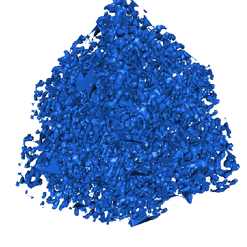
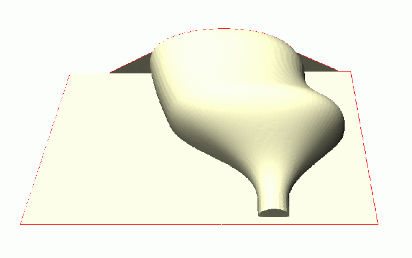

|
CGAL 4.13 - 3D Triangulations
|
|
CGAL 4.13 - 3D Triangulations
|
The basic 3D-triangulation class of CGAL is primarily designed to represent the triangulations of a set of points \( A\) in \( \mathbb{R}^3\). It is a partition of the convex hull of \( A\) into tetrahedra whose vertices are the points of \( A\). Together with the unbounded cell having the convex hull boundary as its frontier, the triangulation forms a partition of \( \mathbb{R}^3\). Its cells ( \( 3\)-faces) are such that two cells either do not intersect or share a common facet ( \( 2\)-face), edge ( \( 1\)-face) or vertex ( \( 0\)-face).
In order to deal only with tetrahedra, which is convenient for many applications, the unbounded cell can be subdivided into tetrahedra by considering that each convex hull facet is incident to an infinite cell having as fourth vertex an auxiliary vertex called the infinite vertex. In that way, each facet is incident to exactly two cells and special cases at the boundary of the convex hull are simple to deal with.
The class Triangulation_3<TriangulationTraits_3,TriangulationDataStructure_3> of CGAL implements this point of view and therefore considers the triangulation of the set of points as a set of finite and infinite tetrahedra. Notice that the infinite vertex has no significant coordinates and that no geometric predicate can be applied on it.
A triangulation is a collection of vertices and cells that are linked together through incidence and adjacency relations. Each cell gives access to its four incident vertices and to its four adjacent cells. Each vertex gives access to one of its incident cells.
The four vertices of a cell are indexed with 0, 1, 2 and 3 in positive orientation, the positive orientation being defined by the orientation of the underlying Euclidean space \( \mathbb{R}^3\) (see Figure 42.1). The neighbors of a cell are also indexed with 0, 1, 2, 3 in such a way that the neighbor indexed by \( i\) is opposite to the vertex with the same index.
As in the underlying combinatorial triangulation (see Chapter 3D Triangulation Data Structure), edges ( \( 1\)-faces) and facets ( \( 2\)-faces) are not explicitly represented: a facet is given by a cell and an index (the facet i of a cell c is the facet of c that is opposite to the vertex with index i) and an edge is given by a cell and two indices (the edge (i,j) of a cell c is the edge whose endpoints are the vertices of c with indices i and j). See Figure 43.1.
Degenerate Dimensions
The class Triangulation_3 can also deal with triangulations whose dimension \( d\) is less than 3. A triangulation of a set of points in \( \mathbb{R}^d\) covers the whole space \( \mathbb{R}^d\) and consists of cells having \( d+1\) vertices: some of them are infinite, they are obtained by linking the additional infinite vertex to each facet of the convex hull of the points.
The same cell class is used in all cases: triangular faces in 2D can be considered as degenerate cells, having only three vertices (resp. neighbors) numbered \( (0,1,2)\); edges in 1D have only two vertices (resp. neighbors) numbered \( 0\) and \( 1\).
The implicit representation of facets (resp. edges) still holds for degenerate dimensions (i.e. dimensions \( <3\)): in dimension 2, each cell has only one facet of index 3, and 3 edges \( (0,1)\), \( (1,2)\) and \( (2,0)\); in dimension 1, each cell has one edge \( (0,1)\).
Validity
A triangulation of \( \mathbb{R}^3\) is said to be locally valid iff
(a)-(b) Its underlying combinatorial graph, the triangulation data structure, is locally valid (see Section Introduction of Chapter 3D Triangulation Data Structure)
(c) Any cell has its vertices ordered according to positive orientation. See Figure 42.1.
When the triangulation is degenerated into a triangulation of dimension 2, the geometric validity reduces to:
(c-2D) For any two adjacent triangles \( (u,v,w_1)\) and \( (u,v,w_2)\) with common edge \( (u,v)\), \( w_1\) and \( w_2\) lie on opposite sides of \( (u,v)\) in the plane.
When all the points are collinear, this condition becomes:
(c-1D) For any two adjacent edges \( (u,v)\) and \( (v,w)\), \( u\) and \( w\) lie on opposite sides of the common vertex \( v\) on the line.
The method Triangulation_3::is_valid() checks the local validity of a given triangulation. This does not always ensure global validity [18], [10] but it is sufficient for practical cases.
The class Delaunay_triangulation_3 represents a three-dimensional Delaunay triangulation.
Delaunay triangulations have the specific empty sphere property, that is, the circumscribing sphere of each cell of such a triangulation does not contain any other vertex of the triangulation in its interior. These triangulations are uniquely defined except in degenerate cases where five points are co-spherical. Note however that the CGAL implementation computes a unique triangulation even in these cases.
This implementation is fully dynamic: it supports insertions of points, vertex removals and displacements of points.
The class Regular_triangulation_3 implements incremental regular triangulations, also known as weighted Delaunay triangulations.
Let \( {p}^{(w)}=(p,w_p), p\in\mathbb{R}^3, w_p\in\mathbb{R}\) and \( {z}^{(w)}=(z,w_z), z\in\mathbb{R}^3, w_z\in\mathbb{R}\) be two weighted points. A weighted point \( {p}^{(w)}=(p,w_p)\) can also be seen as a sphere of center \( p\) and radius \( \sqrt{w_p}\). The power product between \( {p}^{(w)}\) and \( {z}^{(w)}\) is defined as
\[ \Pi({p}^{(w)},{z}^{(w)}) = {\|{p-z}\|^2-w_p-w_z} \]
where \( \|{p-z}\|\) is the Euclidean distance between \( p\) and \( z\).
The weighted points \( {p}^{(w)}\) and \( {z}^{(w)}\) are said to be orthogonal iff \( \Pi{({p}^{(w)},{z}^{(w)})} = 0\) (see Figure 42.2).
Four weighted points have a unique common orthogonal weighted point called the power sphere. The weighted point orthogonal to three weighted points in the plane defined by these three points is called the power circle. The power segment will denote the weighted point orthogonal to two weighted points on the line defined by these two points.
Let \( {S}^{(w)}\) be a set of weighted points in \( \mathbb{R}^3\). A sphere \( {z}^{(w)}\) is said to be regular if \( \forall {p}^{(w)}\in{S}^{(w)}, \Pi{({p}^{(w)},{z}^{(w)})}\geq 0\).
A triangulation of \( {S}^{(w)}\) is regular if the power spheres of all simplices are regular.
The regular triangulation of \( {S}^{(w)}\) is in fact the projection onto \( \mathbb{R}^3\) of the convex hull of the four-dimensional points \( (p,\|p-O\|^2-w_p),\) for \( {p}^{(w)}=(p,w_p)\in{S}^{(w)}\). Note that all points of \( {S}^{(w)}\) do not necessarily appear as vertices of the regular triangulation. To know more about regular triangulations, see for example [14].
When all weights are 0, power spheres are nothing more than circumscribing spheres, and the regular triangulation is exactly the Delaunay triangulation.
The implementation of 3D regular triangulation supports insertions of weighted points, and vertex removals. Displacements are not supported in the current implementation.
The main classes Triangulation_3, Delaunay_triangulation_3 and Regular_triangulation_3 are connected to each other by the derivation diagram shown in Figure 42.3. This diagram also shows another class: Triangulation_utils_3, which provides a set of tools operating on the indices of vertices in cells.
The three main classes (Triangulation_3, Delaunay_triangulation_3 and Regular_triangulation_3) provide high-level geometric functionality such as location of a point in the triangulation [11], insertion and possibly removal of a point [8], and are responsible for the geometric validity. They are built as layers on top of a triangulation data structure, which stores their combinatorial structure. This separation between the geometry and the combinatorics is reflected in the software design by the fact that these three triangulation classes take the following template parameters :
Optionally, the main Delaunay and regular triangulations algorithms (insert, remove) support multi-core shared-memory architectures to take advantage of available parallelism. For this purpose, a model of the concept SurjectiveLockDataStructure can be given as fourth template parameter; it defaults to Spatial_lock_grid_3. This data structure allows to lock points with coordinates (x, y, z) in a 3D domain. When a thread owns the lock on a point, no other thread can lock this point. Locking a facet (resp. a cell) boils down to locking all its 3 (resp. 4) incident vertices. See Section Parallel Algorithms for more details.
The first template parameter of the triangulation class Triangulation_3<TriangulationTraits_3, TriangulationDataStructure_3> is the geometric traits class, described by the concept TriangulationTraits_3. It must define the types of the geometric objects (points, segments, triangles and tetrahedra) forming the triangulation together with a few geometric predicates on these objects: orientation in space, orientation in case of coplanar points, order of collinear points.
In addition to the requirements described before, the geometric traits class of Delaunay_triangulation_3 must define predicates to test for the empty sphere property. It is described by the concept DelaunayTriangulationTraits_3, which refines TriangulationTraits_3.
In addition to the requirements described before, the geometric traits class of Regular_triangulation_3 must define predicates to test for the power distances and orientation tests for power spheres. It is described by the concept RegularTriangulationTraits_3, which refines TriangulationTraits_3.
All kernels provided by CGAL can all be used as models for the geometric traits parameter.
The second template parameter of the main classes (Triangulation_3, Delaunay_triangulation_3 and Regular_triangulation_3) is a triangulation data structure class. This class can be seen as a container for the cells and vertices maintaining incidence and adjacency relations (see Chapter chapterTDS3). A model of this triangulation data structure is Triangulation_data_structure_3, and it is described by the TriangulationDataStructure_3 concept . This model is itself parameterized by a vertex base and a cell base classes, which gives the possibility to customize the vertices and cells used by the triangulation data structure, and hence by the geometric triangulation using it. Depending on the kind of triangulation used, the requirements on the vertex and cell base classes vary, and are expressed by various concepts, following the refinement diagram shown in Figure 42.4.
A default value for the triangulation data structure parameter is provided in all the triangulation classes, so it need not be specified by the user unless he wants to use a different triangulation data structure or a different vertex or cell base class.
The Delaunay triangulation class supports an optional feature which maintains an additional data structure for fast point location queries. The fast location policy should be used when the user inserts points in a random order or needs to do many unrelated queries. If the user is able to give a good hint to help the point location of its queries (and its newly inserted points), then it should prefer the default policy. In such a case where good hints are provided, the default policy save some memory (few percents), and is faster. Notice that if points are not inserted one by one, but as a range, then a good hint is automatically computed using spatial sort.
Reading Section Complexity and Performance on complexity and performance can help making an informed choice for this parameter.
The point location strategy can be selected with the third template argument of Delaunay_triangulation_3, LocationPolicy, which enables a fast point location data structure when set to Fast_location. By default, it uses Compact_location.
Note that you can specify the LocationPolicy parameter without specifying the triangulation data structure, in case you are fine with the default there. In this case, the LocationPolicy appears as a second parameter after the geometric traits.The mechanism used behind the scenes to allow this syntactical convenience is called deduced parameters.
The Fast_location policy is implemented using a hierarchy of triangulations; it changes the behavior of functions locate, insert, move, and remove. As proved in [12], this structure has an optimal behavior when it is built for Delaunay triangulations.
In this setting, if you build a triangulation by iteratively inserting points, you should try to shuffle the points beforehand, as the time complexity is guaranteed only for a randomized order. For example, inserting points in lexicographic order is typically much slower. Note that this shuffling is performed internally by the constructor taking a range of points.
Prior to CGAL 3.6, this functionality was available through the Triangulation_hierarchy_3 class, which is now deprecated.
In order to satisfy as many uses as possible, a design has been selected that allows to exchange different parts to meet the users' needs, while still re-using a maximum of the provided functionalities. We have already seen that the main triangulation classes are parameterized by a geometric traits class and a triangulation data structure (TDS), so that each of them can be interchanged with alternate implementations.
The most useful flexibility is the ability given to the user to add his own data in the vertices and cells by providing his own vertex and cell base classes to Triangulation_data_structure_3. The Figure 42.5 shows in more detail the flexibility that is provided, and the place where the user can insert his own vertex and/or cell base classes.
The design of the triangulation data structure gives the possibility to store any kind of data, including handles (an entity akin to pointers) directly in the vertex and cell base classes.
To do so, there are three possibilities. The simplest one is to use the class Triangulation_vertex_base_with_info_3, and this approach is illustrated in a following subsection Adding a Color. The most complicated one, and probably useless for almost all cases, is to write a vertex base class from scratch, following the documented requirements. This is mostly useless because most of the time it is enough to derive from the models that CGAL provides, and add the desired features. In this case, when the user needs to access some type that depends on the triangulation data structure (typically handles), then he should write something like:
The situation is exactly similar for cell base classes. Section Software Design provides more detailed information.
Parallel algorithms of Delaunay_triangulation_3 and Regular_triangulation_3 are enabled if the TriangulationDataStructure_3::Concurrency_tag type is Parallel_tag and a reference to a lock data structure instance is provided via the constructor or by using Triangulation_3::set_lock_data_structure. This data structure must be a model of the concept SurjectiveLockDataStructure and can be optionally given as a template parameter of the triangulation; it defaults to Spatial_lock_grid_3.
Note that the parallel Delaunay triangulation must use the default compact location policy (and not the fast one). If those conditions are fulfilled, the insertion/removal of a range of points will be performed in parallel, and the individual insert/remove operations will be optionally thread-safe.
Parallel algorithms require the program to be linked against the Intel TBB library. To control the number of threads used, the user may use the tbb::task_scheduler_init class. See the TBB documentation for more details.
This example shows the incremental construction of a 3D triangulation, the location of a point and how to perform elementary operations on indices in a cell. It uses the default parameter of the Triangulation_3 class.
File Triangulation_3/simple_triangulation_3.cpp
The following two examples show how the user can plug his own vertex base in a triangulation. Changing the cell base is similar.
When the user doesn't need to add a type in a vertex which depends on the TriangulationDataStructure_3 (e.g. a Vertex_handle or Cell_handle), then he can use the Triangulation_vertex_base_with_info_3 class to add his own information easily in the vertices. The example below shows how to add a Color this way.
File Triangulation_3/color.cpp
When the user needs to add a type in a vertex which depends on the TriangulationDataStructure_3 (e.g. a Vertex_handle or Cell_handle), then he has to derive his own vertex base class, as the following example shows.
File Triangulation_3/adding_handles_3.cpp
The most efficient method to insert (weighted) points in a Delaunay (or regular) triangulation is to provide an iterator range over (weighted) points to the insert function. However, an iterator range of (weighted) points does not allow to set different information to each vertex. To solve this problem, in the case the vertex type of the triangulation is a model of the concept TriangulationVertexBaseWithInfo_3 (such as Triangulation_vertex_base_with_info_3), we provide three examples doing the same operation: set an unsigned integer as the information of each vertex. The value of this unsigned integer is the initial order of the corresponding point given in the range.
Each point and its information are gathered into a pair. We provide the constructor of the triangulation (which is calling the insert function) with a range of such pairs.
File Triangulation_3/info_insert_with_pair_iterator.cpp
Information and points are in separate containers. We use boost::zip_iterator to provide an iterator gathering them.
File Triangulation_3/info_insert_with_zip_iterator.cpp
We define a functor Auto_count used together with boost::transform_iterator to set the order of each point in the range. Note that this is correct because the iterator is dereferenced only once per point during the insertion.
File Triangulation_3/info_insert_with_transform_iterator.cpp
The triangulation defines a Triangulation_3::Simplex class that represents a simplex (vertex, edge, facet or cell). This example demonstrates how simplices can be stored in a set.
File Triangulation_3/simplex.cpp
File Triangulation_3/fast_location_3.cpp
File Triangulation_3/find_conflicts_3.cpp
This example shows the building of a regular triangulation. In this triangulation, points have an associated weight, and some points can be hidden and do not result in vertices in the triangulation.
File Triangulation_3/regular_3.cpp
This example shows that one must use the class Regular_triangulation_vertex_base_3 as vertex base class, if one has to specifiy the template parameter.
File Triangulation_3/regular_with_info_3.cpp
This example shows the parallel building of a Delaunay triangulation.
File Triangulation_3/parallel_insertion_in_delaunay_3.cpp
This example shows the parallel building of a regular triangulation, followed by the parallel removal of the first 100,000 vertices.
File Triangulation_3/parallel_insertion_and_removal_in_regular_3.cpp
A 3D triangulation can be visualized by calling the CGAL::draw() function as shown in the following example. This function opens a new window showing the given 3D triangulation. The function is blocking, that is the program continues as soon as the user closes the window.
File Triangulation_3/draw_triangulation_3.cpp
This function requires CGAL_Qt5, and is only available if the flag CGAL_USE_BASIC_VIEWER is defined at compile time.
In 3D, the worst case complexity of a triangulation is quadratic in the number of points. For Delaunay triangulations, this bound is reached in cases such as points equally distributed on two non-coplanar lines. However, the good news is that, in many cases, the complexity of a Delaunay triangulation is linear or close to linear in the number of points. Several articles [13], [15], [1], [2], [3] have proved such good complexity bounds for specific point distributions, such as points distributed on surfaces under some conditions.
There are several algorithms provided in this package. We will focus here on the following ones and give practical numbers on their efficiency :
locate function), remove function). We will use the following types of triangulations, using Exact_predicates_inexact_constructions_kernel as geometric traits:
Delaunay_triangulation_3 Delaunay_triangulation_3 with Fast_location Regular_triangulation_3 (default setting : memorize hidden points) Regular_triangulation_3 with hidden points discarded. Figure 42.7 shows, for all these types of triangulations, the times in seconds taken to build a triangulation from a given number of points, then the average time to perform one point location in triangulations of various sizes, and the average time to perform one vertex removal (which is largely independent on the size of the triangulation).
The data sets used here are points randomly distributed in the unit cube (the coordinates are generated using the drand48 C function). In the weighted case, the weights are all zero, which means that there are actually no hidden points during execution.
The measurements have been performed using CGAL 3.6, using the Gnu C++ compiler version 4.3.2, under Linux (Fedora 10 distribution), with the compilation options -O3 -DCGAL_NDEBUG. The computer used was equipped with a 64bit Intel Xeon 3GHz processor and 32GB of RAM (a recent desktop machine as of 2009).
| Delaunay | Delaunay | Regular | Regular | |
| Fast location | No hidden points | |||
| Construction from \( 10^2\) points | 0.00054 | 0.000576 | 0.000948 | 0.000955 |
| Construction from \( 10^3\) points | 0.00724 | 0.00748 | 0.0114 | 0.0111 |
| Construction from \( 10^4\) points | 0.0785 | 0.0838 | 0.122 | 0.117 |
| Construction from \( 10^5\) points | 0.827 | 0.878 | 1.25 | 1.19 |
| Construction from \( 10^6\) points | 8.5 | 9.07 | 12.6 | 12.2 |
| Construction from \( 10^7\) points | 87.4 | 92.5 | 129 | 125 |
| Point location in \( 10^2\) points | 9.93e-07 | 1.06e-06 | 7.19e-06 | 6.99e-06 |
| Point location in \( 10^3\) points | 2.25e-06 | 1.93e-06 | 1.73e-05 | 1.76e-05 |
| Point location in \( 10^4\) points | 4.79e-06 | 3.09e-06 | 3.96e-05 | 3.76e-05 |
| Point location in \( 10^5\) points | 2.98e-05 | 6.12e-06 | 1.06e-04 | 1.06e-04 |
| Point location in \( 10^6\) points | 1e-04 | 9.65e-06 | 2.7e-04 | 2.67e-04 |
| Point location in \( 10^7\) points | 2.59e-04 | 1.33e-05 | 6.25e-04 | 6.25e-04 |
| Vertex removal | 1e-04 | 1.03e-04 | 1.42e-04 | 1.38e-04 |
More benchmarks comparing CGAL to other software can be found in [17].
Figure Figure 42.8 shows insertion and removal speed-ups obtained using the parallel version of the triangulation algorithms of CGAL 4.5. The machine used is a PC running Windows 7 64-bits with two 6-core Intel Xeon CPU X5660 clocked at 2.80 GHz with 32GB of RAM. The program has been compiled with Microsoft Visual C++ 2012 in Release mode.
We give here some indication about the memory usage of the triangulations. Those structures being intensively based on pointers, the size almost doubles on 64bit platforms compared to 32bit.
The size also depends on the size of the point type which is copied in the vertices (hence on the kernel). Obviously, any user data added to vertices and cells also affect the memory used.
More specifically, the memory space used to store a triangulation is first a function of the size of its Vertex and Cell types times their numbers (and for volumic distribution, one sees about 6.7 times more cells than vertices). However, these are stored in memory using Compact_container, which allocates them in lists of blocks of growing size, and this requires some additional overhead for bookkeeping. Moreover, memory is only released to the system when clearing or destroying the triangulation. This can be important for algorithms like simplifications of data sets which will produce fragmented memory usage (doing fresh copies of the data structures are one way out in such cases). The asymptotic memory overhead of Compact_container for its internal bookkeeping is otherwise on the order of \( O(\sqrt{n})\).
Figure 42.9 shows the number of bytes used per points, as measured empirically using Memory_sizer for large triangulations ( \( 10^6\) random points).
| Delaunay | Delaunay | Regular | Regular | |
| Fast location | No hidden points | |||
| 32bit | 274 | 291 | 336 | 282 |
| 64bit | 519 | 553 | 635 | 527 |
Besides the complexity of the Delaunay triangulation that varies with the distribution of the points, another critical aspect affects the efficiency : the degeneracy of the data sets. These algorithms are quite sensitive to numerical accuracy and it is important to run them using exact predicates.
Using a kernel with no exact predicates will quickly lead to crashes or infinite loops once they are executed on non-random data sets. More precisely, problems appear with data sets which contain (nearly) degenerate cases for the orientation and side_of_oriented_sphere predicates, namely when there are (nearly) coplanar or (nearly) cospherical points. This unfortunately happens often in practice with data coming from various kinds of scanners or other automatic acquisition devices.
Using an inexact kernel such as Simple_cartesian<double> would lead to optimal performance, which is only about 30% better than Exact_predicates_inexact_constructions_kernel. The latter is strongly recommended since it takes care about potential robustness issues. The former can be used for benchmarking purposes mostly, or when you really know that your data sets won't exhibit any robustness issue.
Exact predicates take more time to compute when they hit (nearly) degenerate cases. Depending on the data set, this can have a visible impact on the overall performance of the algorithm or not.
Sometimes you need exact constructions as well, so Exact_predicates_exact_constructions_kernel is a must. This is the case for example when you need the dual functions to be exact, or when your input is stored in points of such a kernel for other reasons (because it is the output of another algorithm which has this requirement, for example). This will slow down the computations by a factor of 4 to 5 at least, and it can be much more.
Figure 42.10 gives more detailed timings about various kernels one the following data sets : random points in a cube, random points on the surface of an ellipsoid, points scanned on the surface of a Buddha statue, points on a molecular surface, and points scanned on a dryer handle. See Figure 42.11 for pictures of the last 3 objects, which respectively illustrate volumic data, surfacic data, and data with many degenerate cases. This last data set exhibits an infinite loop with an inexact kernel, and of course we are not sure whether what is computed for the other data sets with this inexact kernel is a Delaunay triangulation. General introductory information about these robustness issues can be found in [16]. More benchmarks around this issue can also be found in [7].
| Random | Ellipsoid | Buddha | Molecule | Dryer | |
| Handle | |||||
| Number of points | 100000 | 100000 | 542548 | 525296 | 49787 |
Simple_cartesian<double> | 0.69 | 0.627 | 4.21 | 3.8 | \( \infty \)-loop |
Exact_predicates_inexact_constructions_kernel | 0.824 | 0.749 | 4.99 | 4.64 | 1.68 |
Exact_predicates_exact_constructions_kernel | 4.59 | 3.85 | 30.1 | 26.4 | 4.57 |
Simple_cartesian<Gmpq> | 492 | 534 | 1120 | 1030 | 75.2 |

|

|
Monique Teillaud started to work on the 3D triangulation packages in 1997, following the design of the 2D triangulation packages. The notions of degenerate dimensions and infinite vertex were formalized [20] and induced changes in the 2D triangulation packages. The packages were first released in CGAL 2.1. They contained basic functionalities on triangulations, Delaunay triangulations, regular triangulations.
A first version of removal of a vertex from a Delaunay triangulation was released in CGAL 2.2. However, this removal became really robust only in CGAL 2.3, after some research that allowed to deal with degenerate cases quite easily [8]. Andreas Fabri implemented this revised version of the removal, and a faster removal algorithm for CGAL 3.0.
The latter algorithm was proposed by Mariette Yvinec, who contributed in several ways to the package, first since she was maintaining the close 2D triangulation package and participated in many discussions, she also wrote the traits classes for regular triangulations.
In 2000, Sylvain Pion started working on these packages. He improved the efficiency of triangulations in CGAL 2.3 and 2.4 in several ways [6] he implemented the Delaunay hierarchy [12] in 2.3, he improved the memory footprint in 2.4 and 3.0, he also performed work on arithmetic filters [7] (see Filtered_kernel) to improve the speed of triangulations. He changed the design in CGAL 3.0, allowing users to add handles in their own vertices and cells.
Olivier Devillers, co-author of preliminary versions of the CGAL 2d triangulations, participated in many discussions, in particular about the perturbations, and more concretely in the implementation of the Delaunay hierarchy.
In 2005, Christophe Delage implemented the vertex removal function for regular triangulations, using the symbolic perturbation proposed in [9], which allowed to release this functionality in CGAL 3.2.
In 2006, Nico Kruithof wrote the Triangulation_simplex_3 class that can store simplices of any dimension and improved the internal organization of the code.
As of March 2007, Christophe Delage made the iterator range insert methods and constructors use spatial_sort to improve efficiency.
In 2008, Camille Wormser added a few more iterators in the package that were integrated in release 3.4.
In 2009, Sylvain Pion simplified the design of the Delaunay hierarchy so that it became the simple Fast_location policy in release 3.6.
In 2010, Pedro de Castro and Olivier Devillers added the point displacement in release 3.7.
In 2011, Pedro de Castro and Olivier Devillers implemented in release 3.8 the structural filtering method, improving the efficiency of point location.
A new demo of this package was introduced in CGAL 3.8, coded by Fei (Sophie) Che, who was co-mentored by Manuel Caroli and Monique Teillaud in the framework of the Google Summer of Code, 2010.
In 2013, Clément Jamin added parallel algorithms (insert, remove) to the Delaunay and regular triangulations.
The authors wish to thank Lutz Kettner for inspiring discussions about the design of CGAL. Jean-Daniel Boissonnat is also acknowledged [5].
 1.8.13
1.8.13